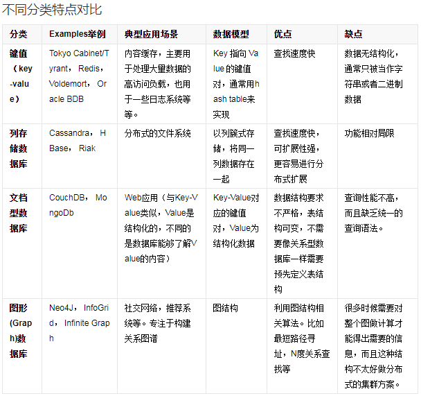
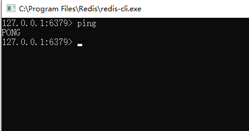
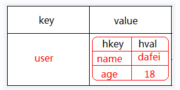
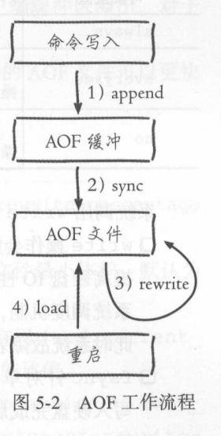
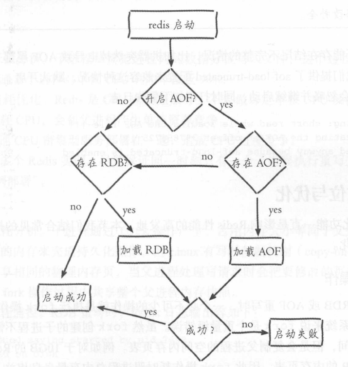

Redis从小白到大白笔记

教学目标
1>了解NoSQL概念
2>了解Redis概念，定位，优点，缺点
3>掌握Redis常用五大类型
4>掌握Redis Key 与Value值设计
5>掌握Redis全局命令
6>掌握Redis 安全与事务操作
7>了解Redis持久化策略
8>了解Redis内存淘汰机制与过期Key清理
9>掌握Java集成Redis操作
10>完成综合案例设计与实现
认识 Redis
数据库分类
老师说：
- 硬盘的io读写速度以ms计算，内存操作以ns计算
- 一般的电脑单机的mysql，一秒钟处理的sql语句2000-4000左右。
- Redis读达到11万次/秒，写达到8万次/秒
目前数据库分：关系型数据库与非关系型数据库
常用的关系型数据库： Oracle，MySQL，SqlServer，DB2
常用的非关系数据库：Redis，MongoDB，ElasticSearch， Hbase，Neo4j
那啥是非关系数据库呢？此处涉及到新名词：NoSQL
NoSQL最常见的解释是“non-relational”， “Not Only SQL”也被很多人接受。NoSQL仅仅是一个概念，泛指非关系型的数据库，区别于关系数据库，它们不保证关系数据的ACID特性。详情见：百度百科：https://baike.baidu.com/item/NoSQL/8828247?fr=aladdin
经典案例
 *
*
NoSQL分类
*
什么是Redis
Redis简介
是以key-value形式存储,和传统的关系型数据库不一样.不一定遵循传统数据库的一些基本要求.(非关系型的,分布式的,开源的,水平可拓展的)
优点: 对数据高并发读写(直接是内存中进行读写的) 对海量数据的高效率存储和访问 对数据的可拓展性和高可用性. 单线程操作,每个操作都是原子操作,没有并发相关问题(redis 6)
缺点: redis(ACID处理非常简单) 无法做太复杂的关系数据库模型
 *
*
老师说：Redis不建议存储敏感数据.
谁在用Redis
比较著名的公司有： github、blizzard、stackoverflow、flickr
国内 新浪微博（全球最大的redis集群）【2017】 2200+亿 commands/day 5000亿Read/day 500亿Write/day 18TB+ Memory 500+ Servers in 6 IDC 2000+instances 淘宝 腾讯微博
怎么学redis
redis在线入门 ： http://try.redis.io/ redis 中文资料站： http://www.redis.cn/ https://www.runoob.com/redis/redis-tutorial.html
Redis的安装
题外话：
Redis是使用C写的程序，目前主流在Linux操作系统，官方不提供Window版，最新的Redis版：Redis7.x
官网下载：https://redis.io/download/
Redis 的Window版是微软公司自行移植的，目前最新版：Redis-x64-3.2.100
window版：https://github.com/microsoftarchive/redis/releases/tag/win-3.2.100
新版控的同学：
1>购买阿里云Redis
https://www.aliyun.com/minisite/goods?taskPkg=amb618all&pkgSid=442814&recordId=4183761&userCode=sd4xtwwm
2>购买阿里云ECS
购买服务器，自己搭建最新版的Redis
3>安装虚拟机：Linux，再安装最新版Redis
这个，项目三讲Linux操作系统时再教。
服务端
版本：Redis-x64-3.2.100.msi
傻瓜式安装,下一步,下一步就可以了
注意：添加到环境变量中
 *
*
注意：默认端口
 *
*
注意：最大内存
 *
*
测试是否成功
 *
*
*
客户端--redisclient
打开CMD命令框，输入命令：java -jar redisclient.jar

客户端--RedisDesktopClient

客户端--rdm

数据类型
概况
Redis支持的存储数据类型有很多：
常用：string（字符串），hash（哈希），list（列表），set（集合）及zset(sorted set：有序集合)
不常用：HyperLogLog，Bitmap(位图)，Bloom Filter(布隆过滤器)，Geospatial(地理位置) ，Module(模块)， Streams(流信息)
此处重点讲解常用的类型。
命令格式
类型命令 key 参数数据
set name dafei
操作建议
Redis操作有点类似Java的Map集合，都是key-value形式存储数据，在学习过程中，可以进行类比。
另外Redis中的key大部分为String类型，value值根据缓存数据结构可以选用：string，hash，list，set，zset等类型。
注意：下面讲的各种类型，表述的是缓存数据的value类型。
String类型
String类型包含多种类型的特殊类型，并且是二进制安全的，其值可以是数值，可以是字符串，也可以是二进制数据。
类似Java中：Map<String, String/Number> map
在Redis内容数据存储结构：
 *
*
常用的命令
| 命令格式 | 功能 | 案例 |
|---|---|---|
| set key value | 将key-value缓存redis中 | set name dafei |
| get key | 从redis中获取key对应value值 | get name |
| incr key | 将key对应value值 + 1 | incr age |
| decr key | 将key对应value值-1 | decr age |
| setex key seconds value | 将key-value缓存到redis中，seconds 秒后失效 | setex sex 10 man |
| ttl key | 查看key存活时间 | ttl sex |
| del key | 从redis中删除key | del name |
| setnx key value | 如果key已经存，不做任何操作，如果key不存，直接添加 | setnx name xiaofei |
注意： 使用ttl查看存活时间，缓存有过期时间的key，过期之后返回-2，而永久存储的key返回的是-1。
非常用命令
| 命令格式 | 功能 | 案例 |
|---|---|---|
| incrby key increment | 给key对应值加increment | incrby age 10 |
| mset k1 v1 k2 v2.... | 批量添加k1v1 k2v2 key value对 | mset name dafei age 18 |
| mget k1 k2.... | 批量获取k1, k2的值 | mget name age |
| append key value | 在key对应的value值中拼+value | append name yes |
| setrange key offset value | 修改key对应的value值,替换为指定value,冲offset索引位置开始 | setrange name 2 xx |
应用场景
1>计数器
如：视频播放数系统就是使用redis作为视频播放数计数的基础组件。
incr viewnum 1
2>共享session
出于负载均衡的考虑，分布式服务会将用户信息的访问均衡到不同服务器上，用户刷新一次访问可能会需要重新登录，为避免这个问题可以用redis将用户session集中管理， 在这种模式下只要保证redis的高可用和扩展性的，每次获取用户更新或查询登录信息都直接从redis中集中获取。

user_login_info:uid---->{"id":1, "name":"dafei", "age":18}
老师说：普通的电脑上装一个tomcat，最佳处理线程在200到400。
Hash类型
Hash类型是String类型的field和value的映射表，或者说是一个String集合。它特别适合存储对象，相比较而言，将一个对象存储在Hash类型里要比存储在String类型里占用更少的内存空间。
类似Java中：Map<String, Map<String, ?>> map
*
常用的命令
| 命令格式 | 功能 | 案例 |
|---|---|---|
| hset key field value | 将field value对缓存到redis中hash中，键值为key | hset user name dafei |
| hget key field | 从key对应hash列表中获取field字段 | hget user name |
| hexists key field | 判断key对应的hash列表是否存在 field字段 | hexists user age |
| hdel key field | 删除key对应hash列表中field字段 | hdel user age |
| hincrby key field increment | 给key对应hash列表中field字段 + increment | hincrby user age 10 |
| hlen key | 查看key对应的hash列表field的数量 | hlen user |
| hkeys key | 获取key对应的hash列表所有的field值 | hkeys user |
| hvals key | 获取key对应的hash列表所有的field对应的value值 | kvals user |
| hgetall key | 获取key对应的hash列表中所有的field及其对应的value值 | hgetall user |
应用场景
Hash结构相对于字符串序列化缓存信息更加直观，并且在更新操作上更加便捷。
共享session设计
public class User{
private String userame;
private String password;
private int age;
}
登录用户：
User user = new User("dafei", "666", 18);
登录缓存：
key：user_token value：new User("dafei", "666", 18)
----------------------------------------------------------------------------------------------
方案1： 将user对象转换json格式字符串存redis 【侧重于查， 改非常麻烦】
key value
---------------------------------------------------------------------------------------------
user_token ： "{name:dafei, age:18, password:666}"
方案2： 将user对象转换hash对象存redis【侧重于改，查询相对麻烦】
key value
---------------------------------------------------------------------------------------------
user_token ： {
name：ddafei
age ： 18
password： 666
}
List类型
Redis中的List类似Java中的Queue,也可以当做List来用.
List类型是一个链表结构的集合，其主要功能有push、pop、获取元素等，更详细的说,List类型是一个双端链表的结构，我们可以通过相关操作进行集合的头部或者尾部添加删除元素，List的设计非常简单精巧，即可以作为栈,又可以作为队列，满足绝大多数需求.
类似Java中：Map<String, List> map
 *
*
常用的命令
| 命令格式 | 功能 | 案例 |
|---|---|---|
| rpush key value | 从右边往key集合中添加value值 | rpush hobby java |
| lrange key start stop | 从左边开始列表key集合，从start位置开始，stop位置结束 | lrange hobby 0 -1 |
| lpush key value | 从左边往key集合中添加value值 | lpush hobby c++ |
| lpop key | 弹出key集合中最左边的数据 | lpop hobby |
| rpop key | 弹出key集合中最右边的数据 | rpop hobby |
| llen key | 获取列表长度 | llen hooby |
非常用命令
| 命令格式 | 功能 | 案例 |
|---|---|---|
| linsert key before pivot value | 操作key集合，在pivot值之前插入value | linsert hobby before java c# |
| linsert key after pivot value | 操作key集合，在pivot值之后插入value | linsert hobby after java c# |
| lset key index value | 操作key集合，更新索引index位置值为value | lset hobby 1 go |
| lrem key count value | 操作key集合，删除 count个 value值 | lrem hobby 3 go |
| ltrim key start stop | 操作key集合，从start到stop截取自列表 | ltrim hobby 2 4 |
| lindex key index | 操作key集合，获取索引为index位置的数据 | lindex hobby 1 |
注意：List是可以塞重复数据的
应用场景
1>用户收藏文章列表：
key：user_favor_article_list
value: [aid1, aid2, aid3......]
Set类型
Set集合是String类型的无序集合,set是通过HashTable实现的，对集合我们可以取交集、并集、差集。
类似Java中：Map<String, Set> map
注意： List可以塞重复数据，但是Set不能塞重复数据。
 *
*
常用的命令
| 命令格式 | 功能 | 案例 |
|---|---|---|
| sadd key members [....] | 往key 集合中添加member元素 | sadd myset a b c |
| smembers key | 遍历key集合中所有的元素 | smembers myset |
| srem key members [....] | 删除key集合中members元素 | srem myset a |
| spop key count | 从key集合中随机弹出count个元素 | spop myset 1 |
非常用命令
| 命令格式 | 功能 | 案例 |
|---|---|---|
| sdiff key1 key2 | 返回key1中特有的元素(差集) | sdiff key1 key2 |
| sidiffstore dest key1 key2 | 返回key1中特有的元素，并将返回值缓存到dest集合中 | sidiffstore dest key1 key2 |
| sinter key1 key2 | 返回key1跟key2集合的交集 | sinter key1 key2 |
| sinterstore dest key1 key2 | 返回key1跟key2集合的交集，并将返回值缓存到dest集合中 | sinterstore dest key1 key2 |
| sunion key1 key2 | 返回key1跟key2集合的并集 | sunion key1 key2 |
| sunionstore dest key1 key2 | 返回key1跟key2集合的并集，并将返回值缓存到dest集合中 | sunionstore dest key1 key2 |
| smove source destination member | 将source集合中member元素移动到destination集合中 | smove key1 key2 aa |
| sismember key member | 判断member元素是否在key集合中 | sismember key1 aa |
| srandmember key count | 随机获取set集合中count 个元素 | srandmember key1 1 |
应用场景
1，去重；
2，抽奖;
1：准备一个抽奖池:sadd luckydraw 1 2 3 4 5 6 7 8 9 10 11 12 13
2：抽3个三等奖:spop luckydraw 3
3：抽2个二等奖:spop luckydraw 2
4：抽1个:一等奖:spop luckydraw 1
Sorted set 类型
Sorted set 也称Zset类型，是一种具有排序效果的set集合。它跟set集合一样也是 string 类型元素的集合，且不允许重复的成员。并且要求每个元素都会关联一个double 类型的分数。后续可以通过分数来为集合中的成员进行从小到大的排序。
Sorted set集合是通过哈希表实现的，所以添加，删除，查找的复杂度都是 O(1)。 集合中最大的成员数为 232 - 1 (4294967295, 每个集合可存储40多亿个成员)。
数据缓存结构：
 *
*
常用的命令
| 命令格式 | 功能 | 案例 |
|---|---|---|
| zadd key score member | 往key集合中添加member元素，分数为score | zadd players 100 a |
| zincrby key increment member | 将key集合中的member元素 分数 + increment | zadd players 100 a |
| zrange key start stop [withscores] | 将key集合中的元素按分数升序排列 [显式分数] | zrange players 0 -1 withscores |
| zrevrange key start stop [withscores] | 将key集合中的元素按分数降序排列 [显式分数] | zrevrange players 0 -1 withscores |
| zrank key member | 返回member元素在key结合中的正序排名 | zrank players a |
| zrevrank key member | 返回member元素在key结合中的倒序排名 | zrevrank players a |
| zcard key | 返回key集合元素个数 | zcard players |
非常用命令
| 命令格式 | 功能 | 案例 |
|---|---|---|
| zrangebyscore key min max [withscores] | 按[min, max) 分数范围返回key集合中元素(正序) | zrangebyscore players 200 300 withscores |
| zrevrangebyscore key min max [withscores] | 按[min, max) 分数范围返回key集合中元素(倒序) | zrevrangebyscore players 200 300 withscores |
| zrem key member | 删除key集合中member元素与分数 | zrem players a |
| zremrangebyscore key min max withscores | 按[min, max) 分数范围删除key集合中元素 | zremrangebyscore players 200 300 withscores |
| zremrangebyrank key start stop | 删除key集合正序排名落在[start, stop) 范围元素 | zremrangebyrank players 10 20 |
| zcount key min max | 按照分数范围[min, max]统计key集合中元素个数 | zcount players 100 300 |
应用场景
排行榜：有序集合经典使用场景。例如视频网站需要对用户上传的视频做排行榜，榜单维护可能是多方面：按照时间、按照播放量、按照获得的赞数等。
类型总结
一个问题，Redis在项目中如何使用？
思考点：
1>项目是否需要使用到缓存？使用
2>使用缓存是否选用Redis？选用
3>使用Redis那该怎么设计Key-Value值？
这里重点讨论Redis的KV对的设计。
Value设计
先说value值的设计其实就是value类型选用： String， Hash， List， Set， Sort Set
一般考虑：
- 是否需要排序？要使用Sort Set
- 缓存的数据是多个值还是单个值，
- 多个值：允许重复选List 不允许重复选择Set
- 单个值：简单值选择String， 对象值选择Hash
一种取巧的方式：
- 是否需要排序？要使用Sort Set
- 剩下使用String
操作方式：
所有value之后都转换成json格式字符串，然后缓存到Redis，原因：Java操作方便，减少泛型操作麻烦
比如：
List<String>list = ...
Set<String> set = ....
Map<String, Object> map = ....
List<Object> list = redis对象.getList
Set<Object> set =redis对象.getSet
Map<Object, Object> map = redis对象.getMap
不管存放啥数据类型，从reds中获取出来都是Object类型，后续对象强制转换麻烦，干脆直接使用字符串。
Key设计
Redis 的key 设计讲究4个性：
唯一性
Redis 类似Map集合，key必须保证唯一，缓存同一个key时，后者会覆盖前者，所有必须要求唯一，那如何保证唯一呢？
最常用的方式：使用缓存数据的主键作为key。
比如：缓存员工信息
key value
----------------------------------------------------------------
1 员工1
2 员工2
其中的1， 2 是员工的id
可读性
可读性是保证Redis的key能做到见名知意，上面的员工id1， 员工id2 虽说能保证key唯一，但可读性非常差，维护key时，无法从， 1， 2中快速判断该key对应value值。所以一一般在保证key唯一的前提下，给key加上前缀：
key value
----------------------------------------------------------------
employee_info:id1 员工1
employee_info:id2 员工2
employee_info:id1 employee_info:id2 这样子设计key，可读性就好多了。
可读性前缀的设计规范千奇百怪，我个人比较推崇的：
-
普通单值
key value
----------------------------------------------------------------
employe_info:id1 员工对象信息
-
类似关系型数据库设计
表名:主键名:主键值:列名
key value
----------------------------------------------------------------
employee : id : 1:info 员工对象信息
-
通用玩法
业务模块名:业务逻辑含义:其他:value类型
key value
-----------------------------------------------------------------------
employee :base.info:id1:hash 员工对象信息
业务模块名：表示该key属于哪个功能模块
业务逻辑含义段：这里可以使用 . 分开， 具体业务逻辑表示
比如：缓存员工权限
employee:auth.permission:id1:set 员工权限集合
其他：一般设置唯一标识，比如主键
value类型：key对应value类型值，提高可读性。
灵活性--项目二重点讲
这个难介绍，一般key保证唯一时，可以使用主键，有的使用，一个主键不能表达出全部意思，可以使用联合主键。
比如：
id为1的朋友圈下id为A的评论。
key value
-----------------------------------------------------------------------
post:1:reply:A 评论内容
post:1:reply:B 评论内容
时效性
Redis key一定要设置过期时间。要跟自己的业务场景，需要对key设置合理的过期时间。可以在写入key时，就要追加过期时间；也可以在按照需要动态设置。
这里要注意：
- 不设置过期时间，这种key为永久key，会一直占用内存不释放，时间久了，数量一多，就容易达到服务器的内存上限，导致宕机，开发时一般配合Key过期策略使用哦。
- key的时效性设置，必须根据业务场景进行评估，设置合理有效期；
Redis全局命令
注意： 在生产环境中尽量不要用keys命令，即使要用也绝对不要用keys *命令，为什么？因为redis是单线程的，使用keys *，花费时间太长，其他命令都会等待keys *命令执行完成，这可能是个灾难。
全局命令针对的是所有的key，大部分用来做运维，做管理的
常用的全局key
| 命令格式 | 功能 | 案例 |
|---|---|---|
| keys pattern | 按照pattern 匹配规则，列表redis中所有的key | keys xxx:* |
| exists key | 判断key是否存在 | exists name |
| expire key seconds | 给key设置过期时间，超时：seconds | expire name 10 |
| persist key | 取消key过期时间 | persist name |
| select index | 切换数据库，默认是第0个，共有【0,15】个 | select 0 |
| move key db | 从当前数据库将key移动到指定db库 | move name 1 |
| randomkey | 随机返回一个key | randomkey |
| rename key newkey | 将key改名为newkey | rename name newname |
| echo message | 打印message信息 | echo message |
| dbsize | 查看key个数 | dbsize |
| info | 查看redis数据库信息 | info |
| config get * | 查看所有redis配置信息 | config get * |
| flushdb | 清空当前数据库 | flushdb |
| flushall | 清空所有数据库 | flushall |
Redis安全性
因为Redis速度非常快，所以在一台比较好的服务器下,一个外部用户在一秒内可以进行15w次的密码尝试，这意味你需要设定非常强大的密码来方式暴力破解。此时就需要对Redis进行密码设置啦。
Linux系统
编辑 redis.conf文件，找到下面进行保存修改 requirepass 自定义密码
重启Redis服务，访问时，使用带密码的命令：
redis-cli -a 自定义密码
否则会提示： (error)NOAUTH Authentication required.
Window系统
跟Linux系统一样，区别是，window系统的文件是
redis.window-service.config
Redis事务[拓展]
一个事务从开始到执行会经历以下三个阶段：
- 开始事务。
- 命令入队。
- 执行事务。
借用：菜鸟教程中例子
它先以 MULTI 开始一个事务， 然后将多个命令入队到事务中， 最后由 EXEC 命令触发事务， 一并执行事务中的所有命令：
redis 127.0.0.1:6379> MULTI
OK
redis 127.0.0.1:6379> SET book-name "Mastering C++ in 21 days"
QUEUED
redis 127.0.0.1:6379> GET book-name
QUEUED
redis 127.0.0.1:6379> SADD tag "C++" "Programming" "Mastering Series"
QUEUED
redis 127.0.0.1:6379> SMEMBERS tag
QUEUED
redis 127.0.0.1:6379> EXEC
1) OK
2) "Mastering C++ in 21 days"
3) (integer) 3
4) 1) "Mastering Series"
2) "C++"
3) "Programming"
单个 Redis 命令的执行是原子性的，但 Redis 没有在事务上增加任何维持原子性的机制，所以 Redis 事务的执行并不是原子性的。
Redis事务可以理解为一个打包的批量执行脚本，但批量指令并非原子化的操作，中间某条指令的失败不会导致前面已做指令的回滚，也不会造成后续的指令不做。
127.0.0.1:6379> multi
OK
127.0.0.1:6379(TX)> set name dafei
QUEUED
127.0.0.1:6379(TX)> set age 18
QUEUED
127.0.0.1:6379(TX)> incr age
QUEUED
127.0.0.1:6379(TX)> incr name
QUEUED
127.0.0.1:6379(TX)> get age
QUEUED
127.0.0.1:6379(TX)> get name
QUEUED
127.0.0.1:6379(TX)> exec
1) OK
2) OK
3) (integer) 19
4) (error) ERR value is not an integer or out of range
5) "19"
6) "dafei"
127.0.0.1:6379>
Redis 事务可以一次执行多个命令， 并且带有以下三个重要的保证：
- 批量操作在发送 EXEC 命令前被放入队列缓存。
- 收到 EXEC 命令后进入事务执行，事务中任意命令执行失败，其余的命令依然被执行。
- 在事务执行过程，其他客户端提交的命令请求不会插入到事务执行命令序列中。
Redis持久化机制[拓展]
引言
先来一个小实验，大家可以一起实现一下
步骤1：在Redis中添加2个key-value对
127.0.0.1:6379> set aa aa
OK
127.0.0.1:6379> set bb bb
OK
127.0.0.1:6379> keys *
步骤2：重启Redis 服务器，在执行keys * 观察数据
步骤3：分析结果
会出现一下几种结果：
- 之前的key在，aa bb 都在（最理想的结果）
- 之前的key在，aa也在，bb不见了
- 之前的key在，aa， bb 不在
- 之前的key， aa， bb 都不在了（最坏的结果）
思考：
为啥会这样？以我们对内存的操作理解，按道理重启之后数据应该全丢失了，为啥Redis 可能丢失，也可能不丢失，为何？
这里就涉及到Redis的持久化机制了。
 *
*
Redis持久化机制目前以后3种，分别为：
1>快照方式（RDB, Redis DataBase）
2>文件追加方式（AOF, Append Only File）
3>混合持久化方式（Redis4版本之后）
RDB方式
Snapshotting(快照)默认方式，将内存数据中以快照的方式写入到二进制文件中，默认为dump.rdb。触发RDB持久化过程分手动触发与自动触发。
触发机制
手动触发
使用save命令：会阻塞当前Redis服务器，知道RDB过程完成为主，如果内存数据较多，会造成长时间阻塞，影响其他命令的使用，不建议轻易使用
使用bgsave命令：Redis进程执行fork指令创建子进程，由子进程实现RDB持久化，有需要时建议使用bgsave命令。
自动触发
使用save相关配置，格式： save m n 表示m秒内数据集存在n次修改时会自动触发bgsave命令。
save 900 1 #900秒内如果超过1个Key被修改则发起快照保存
save 300 10 #300秒内如果超过10个key被修改,则发起快照保存
save 60 10000
 *
*
优点
-
RDB快照文件是一个紧凑压缩的二进制文件，非常使用用于备份，全量复制等场景。开发中可以按照每6小时执行一次bgsave备份，用于容灾备份。
-
Redis加载RDB恢复数据远远快于AOF方式
缺点
- RDB无法做到实时持久化/秒级持久化，每次bgsave时都需要fork子进程，频繁执行有时间成本。
- RDB快照文件不同版本格式不一样，容易引起兼容问题。
AOF方式
AOF与RDB不一样，它是一独立日志的方式记录每次写命令，重启时再重新执行AOF文件中命令达到恢复数据的目的。解决了数据持久化的实时性的问题。
Redis默认是不开启的，需要使用时，需要配置： appendonly yes
AOF 有3种文件同步策略
| 策略 | 解释 |
|---|---|
| appendfsync always | 收到命令就立即写到磁盘,效率最慢.但是能保证完全的持久化 |
| appendfsync everysec | 每秒写入磁盘一次,在性能和持久化方面做了很好的折中 |
| appendfsync no | 完全以依赖os，一般同步周期是30秒 |
*
优点
-
AOF方式数据安全性更高，配置得当，最多损失1秒的数据量
-
在不小心执行flushall命令，也可以通过AOF方式恢复(删除最后一个命令即可)
-
AOF 日志是一个增量日志文件，不会存在断电时出现损坏问题。即使出现问题，redis-check-aof 工具也能够轻松修复它。
-
当 AOF 变得太大时，Redis 能够在后台自动重写 AOF
缺点
- 相同数据量来说，AOF文件体积通常大于RDB文件
- 数据持久化性能上来说，AOF 比 RDB 慢
RDB-AOF混合方式
混合持久化是结合了 RDB 和 AOF 的优点，在写入的时候，先把当前的数据以 RDB 的形式写入文件的开头，再将后续的操作命令以 AOF 的格式存入文件。即以 RDB 作为全量备份，AOF 作为增量备份，来提高备份效率。这样既能保证 Redis 重启时的速度，又能防止数据丢失的风险， 这就是 Redis 4.0 之后推出的 RDB-AOF 混合持久化模式，其作为默认配置来使用。
持久化机制选择
-
如果对数据安全性有非常高的要求，建议 RDB 和 AOF 同时启用。
-
如果对数据安全性要求不是很高，能够容忍数据的丢失，建议单独使用 RDB。
-
不推荐单独使用 AOF，因为对于进行数据库备份、更快重启以及 AOF 引擎中出现错误的情况来说，RDB 是更好的选择。
-
如果没特殊要求，Redis又是4.x版本以上，可以选择RDB-AOF混合方式。
如果不是混合模式，而是普通的RDB与AOF一起启动时，Redis加载数据执行流程
*
Redis内存淘汰机制[拓展]
引言
Redis 启动会加载一个配置：
maxmemory <byte> //内存上限
默认值为 0 (window版的限制为100M)，表示默认设置Redis内存上限。但是真实开发还是需要提前评估key的体量，提前设置好内容上限。
此时思考一个问题，开发中，在设置完内存上限之后，如果Redis key达到上限了，该怎么办？这就设置到Redis的内存淘汰机制了。
内存淘汰算法
Redis内存淘汰机制也可以称之为key内卷机制，当资源不足时，该如何选择？
常见的内存淘汰机制分为四大类：
- **LRU：**LRU是Least recently used，最近最少使用的意思，简单的理解就是从数据库中删除最近最少访问的数据，该算法认为，你长期不用的数据，那么被再次访问的概率也就很小了，淘汰的数据为最长时间没有被使用，仅与时间相关。

-
**LFU：**LFU是Least Frequently Used，最不经常使用的意思，简单的理解就是淘汰一段时间内，使用次数最少的数据，这个与频次和时间相关。

-
**TTL：**Redis中，有的数据是设置了过期时间的，而设置了过期时间的这部分数据，就是该算法要解决的对象。如果你快过期了，不好意思，我内存现在不够了，反正你也要退休了，提前送你一程，把你干掉吧。
-
随机淘汰：生死有命，富贵在天，是否被干掉，全凭天意了。
Redis淘汰策略
Redis 通过配置
maxmemroy-policy
来配置指定具体的淘汰机制，可供选择的值有：
通过maxmemroy-policy可以配置具体的淘汰机制，看了网上很多文章说只有6种，其实有8种，可以看Redis5.0的配置文件，上面有说明：
-
volatile-lru -> 找出已经设置过期时间的数据集，将最近最少使用（被访问到）的数据干掉。
-
volatile-ttl -> 找出已经设置过期时间的数据集，将即将过期的数据干掉。
-
volatile-random -> 找出已经设置过期时间的数据集，进行无差别攻击，随机干掉数据。
-
volatile-lfu -> 找出已经设置过期时间的数据集，将一段时间内，使用次数最少的数据干掉。
-
allkeys-lru ->与第1个差不多，数据集从设置过期时间数据变为全体数据。
-
allkeys-lfu -> 与第4个差不多，数据集从设置过期时间数据变为全体数据。
-
allkeys-random -> 与第3个差不多，数据集从设置过期时间数据变为全体数据。
-
no-enviction -> 什么都不干，报错，告诉你内存不足，这样的好处是可以保证数据不丢失
系统默认选择： noenviction
过期Key处理[拓展]
接下讨论一个问题：Redis的key过期了，该如何清理问题。
Redis给出3种实现方案：
惰性删除：当访问Key时，才去判断它是否过期，如果过期，直接干掉。这种方式对CPU很友好，但是一个key如果长期不用，一直存在内存里，会造成内存浪费。
定时删除：设置键的过期时间的同时，创建一个定时器，当到达过期时间点，立即执行对Key的删除操作，这种方式对CPU不友好，得额外让出CPU维护定时器。
定期删除：隔一段时间，对数据进行一次检查，删除里面的过期Key，至于要删除多少过期Key，检查多少数据，则由算法决定。
Redis服务器实际使用的是惰性删除和定期删除两种策略：通过配合使用这两种删除策略，可以很好地在合理使用CPU和避免浪费内存之间取得平衡。
Redis编程
概况
Redis编程就是使用编程方式操作Redis，当前Redis支持的编程语言有：https://redis.io/docs/clients/

这里以Java为开发语言，选择Java点击进去

java实现操作Redis的客户端有很多，其中名气最高的：Redisson，Jedis，lettuce 3个客户端，其中Jedis，lettuce侧重于单例Redis 数据库的 CRUD（增删改查），Redisson 侧重于分布式开发。当前重点讲解Jedis与lettuce的使用，后续有机会再重点讲解Redisson使用。
Jedis
项目使用的SpringBoot，所以重点讲解SpringBoot继承Jedis
步骤1：建项目，导入依赖
<parent>
<groupId>org.springframework.boot</groupId>
<artifactId>spring-boot-starter-parent</artifactId>
<version>2.4.3</version>
<relativePath/> <!-- lookup parent from repository -->
</parent>
<dependencies>
<dependency>
<groupId>org.springframework.boot</groupId>
<artifactId>spring-boot-starter</artifactId>
</dependency>
<dependency>
<groupId>org.springframework.boot</groupId>
<artifactId>spring-boot-starter-test</artifactId>
<scope>test</scope>
</dependency>
<dependency>
<groupId>redis.clients</groupId>
<artifactId>jedis</artifactId>
</dependency>
<dependency>
<groupId>org.projectlombok</groupId>
<artifactId>lombok</artifactId>
</dependency>
</dependencies>
步骤2：导入配置文件
#redis配置--jedis版
jedis:
pool:
#redis服务器的IP
host: localhost
#redis服务器的Port
port: 6379
#数据库密码
password:
#连接超时时间
timeout: 7200
#最大活动对象数
maxTotall: 100
#最大能够保持idel状态的对象数
maxIdle: 100
#最小能够保持idel状态的对象数
minIdle: 50
#当池内没有返回对象时，最大等待时间
maxWaitMillis: 10000
#当调用borrow Object方法时，是否进行有效性检查
testOnBorrow: true
#当调用return Object方法时，是否进行有效性检查
testOnReturn: true
#“空闲链接”检测线程，检测的周期，毫秒数。如果为负值，表示不运行“检测线程”。默认为-1.
timeBetweenEvictionRunsMillis: 30000
#向调用者输出“链接”对象时，是否检测它的空闲超时；
testWhileIdle: true
# 对于“空闲链接”检测线程而言，每次检测的链接资源的个数。默认为3.
numTestsPerEvictionRun: 50
步骤3：加载配置文件
@Component
@ConfigurationProperties(prefix = "jedis.pool")
@Getter
@Setter
public class JedisProperties {
private int maxTotall;
private int maxIdle;
private int minIdle;
private int maxWaitMillis;
private boolean testOnBorrow;
private boolean testOnReturn;
private int timeBetweenEvictionRunsMillis;
private boolean testWhileIdle;
private int numTestsPerEvictionRun;
private String host;
private String password;
private int port;
private int timeout;
}
步骤4：编写Jedis配置类
@Configuration
public class JedisConfig {
/**
* jedis连接池
* @param jedisProperties
* @return
*/
@Bean
public JedisPool jedisPool(JedisProperties jedisProperties) {
JedisPoolConfig config = new JedisPoolConfig();
config.setMaxTotal(jedisProperties.getMaxTotall());
config.setMaxIdle(jedisProperties.getMaxIdle());
config.setMinIdle(jedisProperties.getMinIdle());
config.setMaxWait(Duration.ofMillis(jedisProperties.getMaxWaitMillis()));
config.setTestOnBorrow(jedisProperties.isTestOnBorrow());
config.setTestOnReturn(jedisProperties.isTestOnReturn());
config.setTimeBetweenEvictionRuns(Duration.ofMillis(jedisProperties.getTimeBetweenEvictionRunsMillis()));
config.setTestWhileIdle(jedisProperties.isTestWhileIdle());
config.setNumTestsPerEvictionRun(jedisProperties.getNumTestsPerEvictionRun());
if (StringUtils.hasText(jedisProperties.getPassword())) {
return new JedisPool(config, jedisProperties.getHost(), jedisProperties.getPort(),
jedisProperties.getTimeout(), jedisProperties.getPassword());
}
return new JedisPool(config, jedisProperties.getHost(), jedisProperties.getPort(),
jedisProperties.getTimeout());
}
}
步骤5：编写测试类，实现测试
@SpringBootTest
public class JedisTest {
@Autowired
private JedisPool jedisPool;
@Test
public void testConnection(){
System.out.println(jedisPool);
Jedis jedis = jedisPool.getResource();
//需求：往redis中添加kv对： name：dafei
jedis.set("name", "dafei");
System.out.println(jedis.get("name"));
jedis.close();
}
}
操作技巧：jedis中方法跟Redis中命令一样
Lettuce
Lettuce 之所以能流行，因为它抱了根好大腿-Spring-data。Spring-data-redis底层就封装了Lettuce，接下来看下Springboot版的lettuce实现。
步骤1：导入依赖
<dependency>
<groupId>org.springframework.boot</groupId>
<artifactId>spring-boot-starter-data-redis</artifactId>
</dependency>
步骤2：Redis配置
spring:
redis:
host: 127.0.0.1
port: 6379
password: admin
步骤3：编写测试类，实现测试
@SpringBootTest
public class LettureTest {
@Autowired
//约定：
// 操作redis的key 是字符串
// value是字符串类型或字符串类型元素
private StringRedisTemplate template;
@Test
public void testRedis(){
//name：dafei
template.opsForValue().set("name", "dafei");
System.out.println(template.opsForValue().get("name"));
// 操作string
//template.opsForValue().xx();
// 操作hash
//template.opsForHash().xx();
// 操作list
//template.opsForList().xx();
// 操作set
//template.opsForSet().xx();
// 操作zset
//template.opsForZSet().xx();
//spring-data-redis 方法是redis 命令全称
//template.opsForList().rightPush() //rpush
//全局命令在template类上
//template.keys("*");
}
}
操作技巧：Lettuce中方法跟Redis中命令全称
小案例
类似效果：https://www.mafengwo.cn/gonglve/ziyouxing/2339.html
 *
*